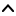

| Top |  |
GstVideoOverlayGstVideoOverlay — Interface for setting/getting a window system resource on elements supporting it to configure a window into which to render a video. |
The GstVideoOverlay interface is used for 2 main purposes :
To get a grab on the Window where the video sink element is going to render. This is achieved by either being informed about the Window identifier that the video sink element generated, or by forcing the video sink element to use a specific Window identifier for rendering.
To force a redrawing of the latest video frame the video sink element displayed on the Window. Indeed if the GstPipeline is in GST_STATE_PAUSED state, moving the Window around will damage its content. Application developers will want to handle the Expose events themselves and force the video sink element to refresh the Window's content.
Using the Window created by the video sink is probably the simplest scenario, in some cases, though, it might not be flexible enough for application developers if they need to catch events such as mouse moves and button clicks.
Setting a specific Window identifier on the video sink element is the most flexible solution but it has some issues. Indeed the application needs to set its Window identifier at the right time to avoid internal Window creation from the video sink element. To solve this issue a GstMessage is posted on the bus to inform the application that it should set the Window identifier immediately. Here is an example on how to do that correctly:
1 2 3 4 5 6 7 8 9 10 11 12 13 14 15 16 17 18 19 20 21 22 23 24 25 26 27 28 29 30 31 32 |
static GstBusSyncReply create_window (GstBus * bus, GstMessage * message, GstPipeline * pipeline) { // ignore anything but 'prepare-window-handle' element messages if (!gst_is_video_overlay_prepare_window_handle_message (message)) return GST_BUS_PASS; win = XCreateSimpleWindow (disp, root, 0, 0, 320, 240, 0, 0, 0); XSetWindowBackgroundPixmap (disp, win, None); XMapRaised (disp, win); XSync (disp, FALSE); gst_video_overlay_set_window_handle (GST_VIDEO_OVERLAY (GST_MESSAGE_SRC (message)), win); gst_message_unref (message); return GST_BUS_DROP; } ... int main (int argc, char **argv) { ... bus = gst_pipeline_get_bus (GST_PIPELINE (pipeline)); gst_bus_set_sync_handler (bus, (GstBusSyncHandler) create_window, pipeline, NULL); ... } |
There are two basic usage scenarios: in the simplest case, the application
uses playbin or plasink or knows exactly what particular element is used
for video output, which is usually the case when the application creates
the videosink to use (e.g. xvimagesink, ximagesink, etc.) itself; in this
case, the application can just create the videosink element, create and
realize the window to render the video on and then
call gst_video_overlay_set_window_handle() directly with the XID or native
window handle, before starting up the pipeline.
As playbin and playsink implement the video overlay interface and proxy
it transparently to the actual video sink even if it is created later, this
case also applies when using these elements.
In the other and more common case, the application does not know in advance what GStreamer video sink element will be used for video output. This is usually the case when an element such as autovideosink is used. In this case, the video sink element itself is created asynchronously from a GStreamer streaming thread some time after the pipeline has been started up. When that happens, however, the video sink will need to know right then whether to render onto an already existing application window or whether to create its own window. This is when it posts a prepare-window-handle message, and that is also why this message needs to be handled in a sync bus handler which will be called from the streaming thread directly (because the video sink will need an answer right then).
As response to the prepare-window-handle element message in the bus sync
handler, the application may use gst_video_overlay_set_window_handle() to tell
the video sink to render onto an existing window surface. At this point the
application should already have obtained the window handle / XID, so it
just needs to set it. It is generally not advisable to call any GUI toolkit
functions or window system functions from the streaming thread in which the
prepare-window-handle message is handled, because most GUI toolkits and
windowing systems are not thread-safe at all and a lot of care would be
required to co-ordinate the toolkit and window system calls of the
different threads (Gtk+ users please note: prior to Gtk+ 2.18
GDK_WINDOW_XID() was just a simple structure access, so generally fine to do
within the bus sync handler; this macro was changed to a function call in
Gtk+ 2.18 and later, which is likely to cause problems when called from a
sync handler; see below for a better approach without GDK_WINDOW_XID()
used in the callback).
1 2 3 4 5 6 7 8 9 10 11 12 13 14 15 16 17 18 19 20 21 22 23 24 25 26 27 28 29 30 31 32 33 34 35 36 37 38 39 40 41 42 43 44 45 46 47 48 49 50 51 52 53 54 55 56 57 58 59 60 61 62 63 64 65 66 67 68 69 70 71 72 73 74 75 76 77 78 79 80 81 82 83 84 85 86 87 88 89 90 91 92 93 94 95 96 |
#include <gst/video/videooverlay.h> #include <gtk/gtk.h> #ifdef GDK_WINDOWING_X11 #include <gdk/gdkx.h> // for GDK_WINDOW_XID #endif #ifdef GDK_WINDOWING_WIN32 #include <gdk/gdkwin32.h> // for GDK_WINDOW_HWND #endif ... static guintptr video_window_handle = 0; ... static GstBusSyncReply bus_sync_handler (GstBus * bus, GstMessage * message, gpointer user_data) { // ignore anything but 'prepare-window-handle' element messages if (!gst_is_video_overlay_prepare_window_handle_message (message)) return GST_BUS_PASS; if (video_window_handle != 0) { GstVideoOverlay *overlay; // GST_MESSAGE_SRC (message) will be the video sink element overlay = GST_VIDEO_OVERLAY (GST_MESSAGE_SRC (message)); gst_video_overlay_set_window_handle (overlay, video_window_handle); } else { g_warning ("Should have obtained video_window_handle by now!"); } gst_message_unref (message); return GST_BUS_DROP; } ... static void video_widget_realize_cb (GtkWidget * widget, gpointer data) { #if GTK_CHECK_VERSION(2,18,0) // Tell Gtk+/Gdk to create a native window for this widget instead of // drawing onto the parent widget. // This is here just for pedagogical purposes, GDK_WINDOW_XID will call // it as well in newer Gtk versions if (!gdk_window_ensure_native (widget->window)) g_error ("Couldn't create native window needed for GstVideoOverlay!"); #endif #ifdef GDK_WINDOWING_X11 { gulong xid = GDK_WINDOW_XID (gtk_widget_get_window (video_window)); video_window_handle = xid; } #endif #ifdef GDK_WINDOWING_WIN32 { HWND wnd = GDK_WINDOW_HWND (gtk_widget_get_window (video_window)); video_window_handle = (guintptr) wnd; } #endif } ... int main (int argc, char **argv) { GtkWidget *video_window; GtkWidget *app_window; ... app_window = gtk_window_new (GTK_WINDOW_TOPLEVEL); ... video_window = gtk_drawing_area_new (); g_signal_connect (video_window, "realize", G_CALLBACK (video_widget_realize_cb), NULL); gtk_widget_set_double_buffered (video_window, FALSE); ... // usually the video_window will not be directly embedded into the // application window like this, but there will be many other widgets // and the video window will be embedded in one of them instead gtk_container_add (GTK_CONTAINER (ap_window), video_window); ... // show the GUI gtk_widget_show_all (app_window); // realize window now so that the video window gets created and we can // obtain its XID/HWND before the pipeline is started up and the videosink // asks for the XID/HWND of the window to render onto gtk_widget_realize (video_window); // we should have the XID/HWND now g_assert (video_window_handle != 0); ... // set up sync handler for setting the xid once the pipeline is started bus = gst_pipeline_get_bus (GST_PIPELINE (pipeline)); gst_bus_set_sync_handler (bus, (GstBusSyncHandler) bus_sync_handler, NULL, NULL); gst_object_unref (bus); ... gst_element_set_state (pipeline, GST_STATE_PLAYING); ... } |
1 2 3 4 5 6 7 8 9 10 11 12 13 14 15 16 17 18 19 20 21 22 23 24 25 26 27 28 29 30 31 32 33 34 35 36 37 38 39 40 41 42 43 44 45 46 47 48 49 50 51 52 53 |
#include <glib.h> #include <gst/gst.h> #include <gst/video/videooverlay.h> #include <QApplication> #include <QTimer> #include <QWidget> int main(int argc, char *argv[]) { if (!g_thread_supported ()) g_thread_init (NULL); gst_init (&argc, &argv); QApplication app(argc, argv); app.connect(&app, SIGNAL(lastWindowClosed()), &app, SLOT(quit ())); // prepare the pipeline GstElement *pipeline = gst_pipeline_new ("xvoverlay"); GstElement *src = gst_element_factory_make ("videotestsrc", NULL); GstElement *sink = gst_element_factory_make ("xvimagesink", NULL); gst_bin_add_many (GST_BIN (pipeline), src, sink, NULL); gst_element_link (src, sink); // prepare the ui QWidget window; window.resize(320, 240); window.show(); WId xwinid = window.winId(); gst_video_overlay_set_window_handle (GST_VIDEO_OVERLAY (sink), xwinid); // run the pipeline GstStateChangeReturn sret = gst_element_set_state (pipeline, GST_STATE_PLAYING); if (sret == GST_STATE_CHANGE_FAILURE) { gst_element_set_state (pipeline, GST_STATE_NULL); gst_object_unref (pipeline); // Exit application QTimer::singleShot(0, QApplication::activeWindow(), SLOT(quit())); } int ret = app.exec(); window.hide(); gst_element_set_state (pipeline, GST_STATE_NULL); gst_object_unref (pipeline); return ret; } |
void gst_video_overlay_got_window_handle (GstVideoOverlay *overlay,guintptr handle);
This will post a "have-window-handle" element message on the bus.
This function should only be used by video overlay plugin developers.
overlay |
a GstVideoOverlay which got a window |
|
handle |
a platform-specific handle referencing the window |
void gst_video_overlay_set_window_handle (GstVideoOverlay *overlay,guintptr handle);
This will call the video overlay's set_window_handle method. You
should use this method to tell to an overlay to display video output to a
specific window (e.g. an XWindow on X11). Passing 0 as the handle
will
tell the overlay to stop using that window and create an internal one.
void
gst_video_overlay_prepare_window_handle
(GstVideoOverlay *overlay);
This will post a "prepare-window-handle" element message on the bus
to give applications an opportunity to call
gst_video_overlay_set_window_handle() before a plugin creates its own
window.
This function should only be used by video overlay plugin developers.
void
gst_video_overlay_expose (GstVideoOverlay *overlay);
Tell an overlay that it has been exposed. This will redraw the current frame in the drawable even if the pipeline is PAUSED.
void gst_video_overlay_handle_events (GstVideoOverlay *overlay,gboolean handle_events);
Tell an overlay that it should handle events from the window system. These events are forwarded upstream as navigation events. In some window system, events are not propagated in the window hierarchy if a client is listening for them. This method allows you to disable events handling completely from the GstVideoOverlay.
overlay |
a GstVideoOverlay to expose. |
|
handle_events |
a gboolean indicating if events should be handled or not. |
gboolean gst_video_overlay_set_render_rectangle (GstVideoOverlay *overlay,gint x,gint y,gint width,gint height);
Configure a subregion as a video target within the window set by
gst_video_overlay_set_window_handle(). If this is not used or not supported
the video will fill the area of the window set as the overlay to 100%.
By specifying the rectangle, the video can be overlayed to a specific region
of that window only. After setting the new rectangle one should call
gst_video_overlay_expose() to force a redraw. To unset the region pass -1 for
the width
and height
parameters.
This method is needed for non fullscreen video overlay in UI toolkits that do not support subwindows.
gboolean
gst_is_video_overlay_prepare_window_handle_message
(GstMessage *msg);
Convenience function to check if the given message is a "prepare-window-handle" message from a GstVideoOverlay.
void gst_video_overlay_install_properties (GObjectClass *oclass,gint last_prop_id);
This helper shall be used by classes implementing the GstVideoOverlay interface that want the render rectangle to be controllable using properties. This helper will install "render-rectangle" property into the class.
oclass |
The class on which the properties will be installed |
|
last_prop_id |
The first free property ID to use |
Since: 1.14
gboolean gst_video_overlay_set_property (GObject *object,gint last_prop_id,guint property_id,const GValue *value);
This helper shall be used by classes implementing the GstVideoOverlay
interface that want the render rectangle to be controllable using
properties. This helper will parse and set the render rectangle calling
gst_video_overlay_set_render_rectangle().
object |
The instance on which the property is set |
|
last_prop_id |
The highest property ID. |
|
property_id |
The property ID |
|
value |
The GValue to be set |
Since: 1.14
typedef struct _GstVideoOverlay GstVideoOverlay;
Opaque GstVideoOverlay interface structure
struct GstVideoOverlayInterface {
GTypeInterface iface;
/* virtual functions */
void (*expose) (GstVideoOverlay *overlay);
void (*handle_events) (GstVideoOverlay *overlay, gboolean handle_events);
void (*set_render_rectangle) (GstVideoOverlay *overlay,
gint x, gint y,
gint width, gint height);
void (*set_window_handle) (GstVideoOverlay *overlay, guintptr handle);
};
GstVideoOverlay interface
GTypeInterface |
parent interface type. |
|
virtual method to handle expose events |
||
virtual method to handle events |
||
virtual method to set the render rectangle |
||
virtual method to configure the window handle |